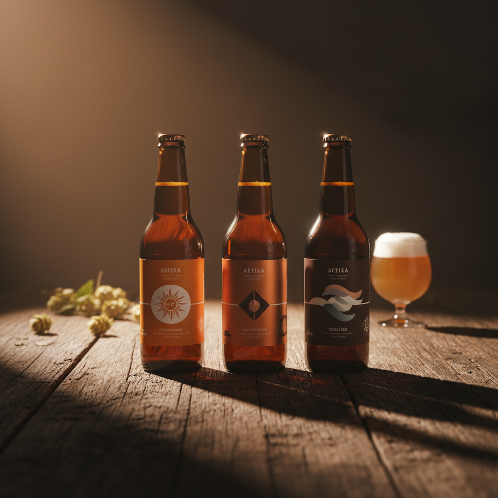
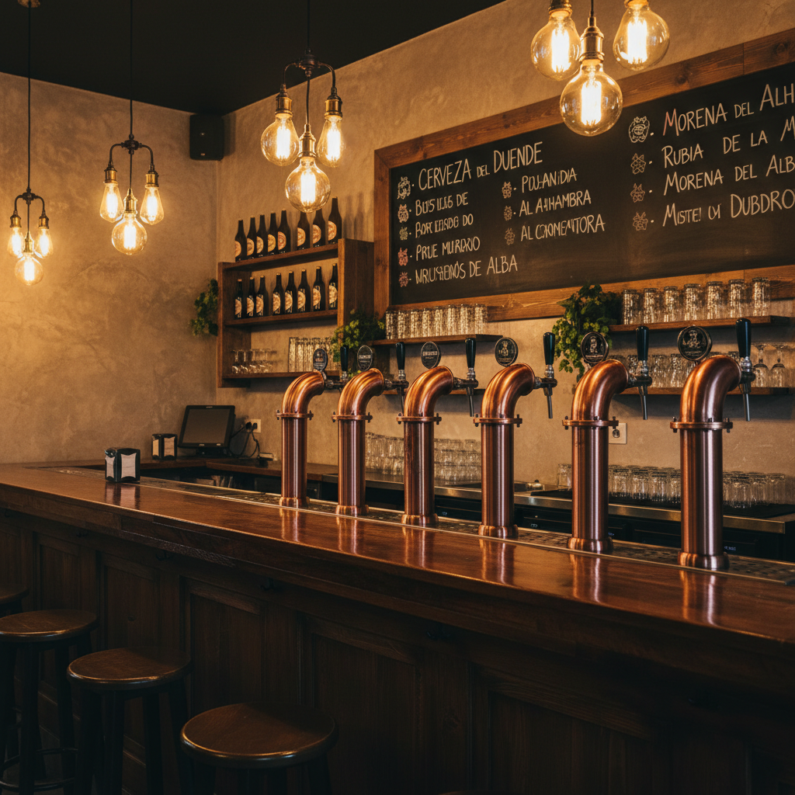

Elaboramos cerveza artesanal inspirada en el territorio que nos rodea: el Montgó, el Cabo de la Nau, los bancales de naranjas, las cerezas de la Vall de Gallinera. Cada receta cuenta un lugar.

Cada receta lleva el nombre de un rincón concreto del territorio. El pueblo, el cabo, el valle, la montaña. Bebés una zona, no una etiqueta.
El brewpub donde probás todo lo que hacemos, tirado de barril, en el sitio donde se piensa cada receta.

La Marina Alta no es una: son 33 pueblos repartidos entre la costa y el interior. El Montgó marca el horizonte. Los bancales de naranjos bajan hasta el mar. En la Vall de Gallinera florecen los cerezos cada primavera.
Todo eso cabe en una botella. No como aroma añadido: como nombre, como historia, como excusa para contar de dónde somos.